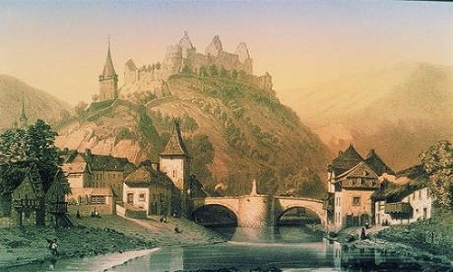
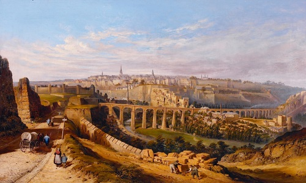
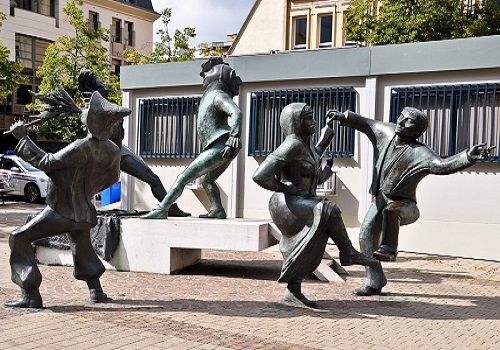
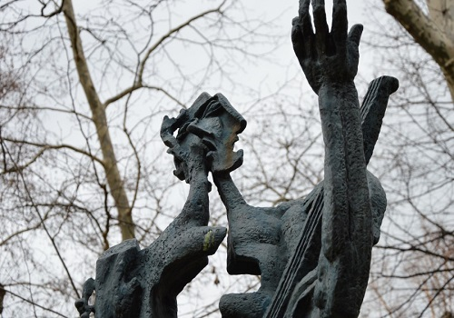
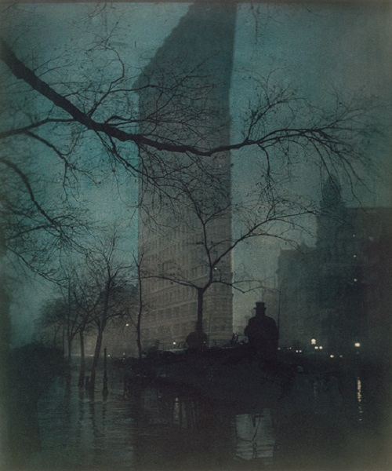
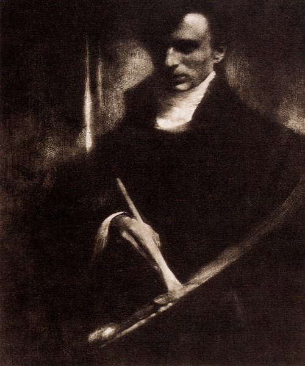
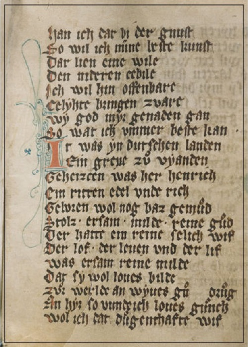
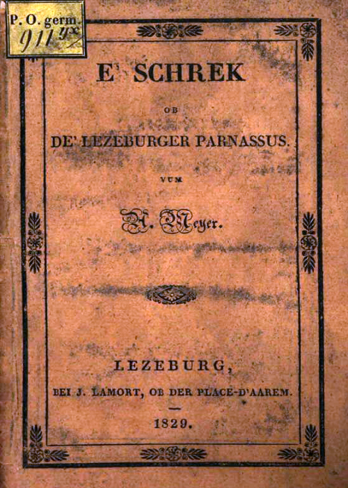

Культура і мистецтво Люксембургу Культура:унікальна культура Люксембургу тим, що вона розвивалася під впливом двох держав, які довгий час передавали країну з рук в руки. Загалом, культурне життя люксембуржців досить подібне до культурного життя населення сусідніх регіонів суміжних країн. Малярство:найважливішими художниками країни 19 століття були Жан-Батист Фрезе й Ніколя Льє, відомі, зокрема, своїми пейзажами Люксембургу і його околиць. Жан Якобі, митець початку 20 століття, був володарем олімпійської золотої медалі у змаганнях з мистецтв. Відомим експресіоністом був Йозеф Куттер, автор пейзажів і портретів. Його картина «Люксембург», була виставлена у 1937 році на Всесвітній виставці у Парижі. Іншими помітними художниками були Домінік Ланг, Марсель Лансам, Еміль Кіршт, Мішель Стофель, Фоні Тіссен і Густ Грас, Ніко Клопп, автор чудових пост-імпресіоністських пейзажів, Состен Вайс, малював численні акварелі з видами Люксембургу.  Скульптура:поміж скульпторів найбільш відомими є автор абстрактних композицій Люсьєн Веркольє (виконував роботи в бронзі й мармурі) та Клаус Сіто (відомий як автор скульптури «Золота Жінка», що увінчує обеліск Монумента пам'яті). Одним з найуспішніших художників початку 21 століття є Су-Мей Це, уродженка Люксембургу напівкитайського походження. У 2003 році вона одержала приз «Золотий Лев» Венеціанського бієнале. З 1893 року існує Художній гурток Люксембургу - спілка художників та организація, яка щорічно присуджує «Приз великого герцога Адольфа» одному або кільком художникам, скульпторам і фотографам.  Фотографія:одним з піонерів фотографії у Люксембурзі був художник Ніколя Льє. Першу фотомайстерню у місті Люксембург відкрив маляр Петер (П'єр) Брандебург . Успішним фотографом, що робив фотографічні портрети й пейзажі, був Шарль Бернгофт , фотограф люксембурзького двору. Він мав свою майстерню та розробив фотоспалах, який дав змогу йому зменшити час експозиції. Фізик Габрієль Ліппман -один з піонерів кольорової фотографії, лауреат Нобелівської премії «за створення методу фотографічного відтворення кольорів на основі явища інтерференції». В Люксембурзі народився художник і фотограф Едвард Стайхен. Також відомий своїми фото міста Люксембург фотограф-аматор Баті Фішер .  Література:пам'яткою середньовічної люксембурзької літератури є «Марієнтальський кодекс», написаний на початку 14 століття . Автором його вважається чернець Герман Венденцький. Рукопис з 5963 рядків є біографією Йоланди з Віандену, відомої люксембурзької черниці. В ньому розповідається про те, як принцеса Йоланда покинула комфортне життя у замку Віанден й перейшла у манастир у Марієнталі, де стала ігуменью.У 1829 році Антоні Майєр написав і видав першу книжку «Сходження на люксембурзький парнас» льотцебурзькою німецькою, яка пізніше стала називатися люксембурзькою мовою.Найважливішими фігурами в історії люксембурзької літератури є Едмон де ла Фонтен, поет Мішель Ленц і поет Мішель Роданж, автор люксембурзького національного епосу «Ренерт-Лис», письменник Баті Вебер журналіст і автор коротких історій, новел, драм і поем.  Музика:широкий загальний інтерес до музики і музичної діяльності в Люксембурзі можна побачити з числа членів Спілки великого герцога Адольфа, національної музичної федерації хорових товариств, духових оркестрів, музичних шкіл, театральних товариств, фольклорних асоціацій і інструментальних груп. Близько 340 музичних груп і колективів з більш ніж 17 000 індивідуальних членів в даний час є членами спілки. Один з найдавніших записів музичного твору в Люксембурзі — рукопис Officium Sancti Willibrordi, зроблений у абатстві Ехтернах, — відносться приблизно до 900 року. 1842 року було створено Люксембурзький військовий оркестор. У 1852 році у містечку Еттельбрюк місцевим піаністом Віктором Мюллердофом було засновано Філорманічне товариство.